流匹配生成建模Flow Matching for Generative Modeling
我们提出一种建立在连续归一化流（CNF）之上的生成建模新范式，它使我们能够以前所未有的规模训练 CNF。具体来说，我们提出流匹配（FM）的概念——一种基于回归固定条件概率路径的向量场的、免模拟的 CNF 训练方法。流匹配与一大类连接噪声与数据样本的高斯概率路径兼容，而已有的扩散路径只是其中的特例。有意思的是，我们发现把 FM 用在扩散路径上，会得到一种更稳健、更稳定的扩散模型训练替代方案。此外，流匹配为用其他非扩散的概率路径训练 CNF 打开了大门。一个特别值得关注的例子是用最优传输（OT）的位移插值来定义条件概率路径；这些路径比扩散路径更高效，带来更快的训练与采样，并取得更好的泛化。在 ImageNet 上用流匹配训练 CNF，在似然与样本质量两方面都一致优于其他基于扩散的方法，并且可以用现成的数值 ODE 求解器实现快速可靠的样本生成。
正文、图表与参考文献均来自源 PDF 解析结果。专业术语、模型名、数据集名与人名按要求保留原文；术语上的金色虚线表示可悬停（触屏可点按）查看中文解释。参考文献整节保留英文原文不译。本文原文采用「作者—年份」式引用，翻译时保留原样。
1 引言
深度生成模型是一类旨在估计未知数据分布并从中采样的深度学习算法。生成建模近来涌现的大量惊人进展——例如图像生成方面的 Ramesh et al. (2022)、Rombach et al. (2022)——主要得益于基于扩散的模型（Ho et al., 2020; Song et al., 2020b）可扩展且相对稳定的训练。然而，局限于简单的扩散过程会带来相当狭窄的采样概率路径空间，导致训练时间非常长，并且需要采用专门方法（例如 Song et al. (2020a); Zhang & Chen (2022)）才能高效采样。
在本工作中，我们考虑连续归一化流（CNF; Chen et al. (2018)）这一通用且确定性的框架。CNF 能够建模任意的概率路径，并且已知它特别涵盖了扩散过程所建模的概率路径（Song et al., 2021）。然而，除了可以用去噪得分匹配（Vincent, 2011）等方式高效训练的扩散之外，尚不存在可扩展的 CNF 训练算法。事实上，最大似然训练（例如 Grathwohl et al. (2018)）需要昂贵的 ODE 数值模拟，而已有的免模拟方法或者涉及难以计算的积分（Rozen et al., 2021），或者梯度有偏（Ben-Hamu et al., 2022）。
本工作的目标是提出流匹配（FM）——一种高效的、免模拟的 CNF 模型训练方法，它允许采用一般性的概率路径来监督 CNF 的训练。重要的是，FM 打破了 CNF 训练只能止步于扩散的可扩展性壁垒，并绕过了为处理概率路径而必须推理扩散过程的需要。
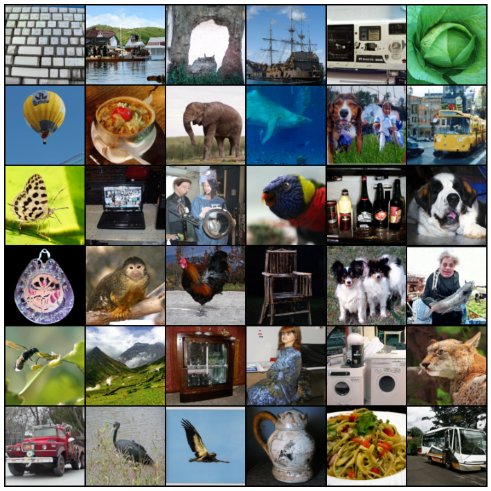
具体来说，我们提出流匹配目标（第 3 节），这是一个简单直观的训练目标：回归一个能生成所需概率路径的目标向量场。我们首先说明，可以通过逐样本（即条件）的表述来构造这样的目标向量场。随后，受去噪得分匹配的启发，我们说明一个称为条件流匹配（CFM）的逐样本训练目标能提供等价的梯度，并且不需要显式知道那个难以计算的目标向量场。进一步，我们讨论一族可用于流匹配的逐样本概率路径（第 4 节），它把已有的扩散路径作为特例包含在内。即便在扩散路径上，我们也发现使用 FM 能带来更稳健、更稳定的训练，并相比得分匹配取得更优表现。此外，这族概率路径还包含一个特别有意思的情形：对应于最优传输（OT）位移插值（McCann, 1997）的向量场。我们发现条件 OT 路径比扩散路径更简单：前者形成直线轨迹，而扩散路径产生弯曲轨迹。这些性质似乎能在经验上转化为更快的训练、更快的生成以及更好的性能。
我们在 ImageNet 这一庞大且高度多样的图像数据集上，对流匹配以及基于最优传输路径的构造做了实证验证。我们发现可以轻松训练出在似然估计与样本质量两方面都优于同类基于扩散方法的模型。此外，我们发现相比先前方法，我们的模型在计算代价与样本质量之间提供了更好的折中。图 1 展示了我们模型在 ImageNet 128×128 上选出的无条件样本。
2 预备知识：连续归一化流
设 ℝd 表示数据空间，数据点 x = (x1, …, xd) ∈ ℝd。本文使用两个重要对象：概率密度路径 p : [0, 1] × ℝd → ℝ>0，它是一个随时间1变化的概率密度函数，即 ∫ pt(x) dx = 1；以及一个随时间变化的向量场 v : [0, 1] × ℝd → ℝd。向量场 vt 可用来构造一个随时间变化的微分同胚映射，称为流 φ : [0, 1] × ℝd → ℝd，它由下述常微分方程（ODE）定义：
此前，Chen et al. (2018) 提出用神经网络 vt(x; θ) 建模向量场 vt，其中 θ ∈ ℝp 是可学习参数，这又给出流 φt 的深度参数化模型，称为连续归一化流（CNF）。CNF 通过推前（push-forward）方程，把简单先验密度 p0（例如纯噪声）重塑为更复杂的密度 p1：
其中推前（或称变量替换）算子 * 定义为
若向量场 vt 的流 φt 满足式 3，则称 vt 生成概率密度路径 pt。检验一个向量场是否生成某概率路径的一个实用方法是使用连续性方程，它是我们证明中的关键构件，见附录 B。关于 CNF 的更多信息，特别是如何在任意点 x ∈ ℝd 计算概率 p1(x)，我们在附录 C 中回顾。
3 流匹配
记 x1 为服从某个未知数据分布 q(x1) 的随机变量。我们假定只能取到来自 q(x1) 的数据样本，而无法访问密度函数本身。此外，设 pt 是一条概率路径，使 p0 = p 为简单分布，例如标准正态分布 p(x) = N(x | 0, I)，并令 p1 在分布上近似等于 q。稍后我们将讨论如何构造这样的路径。流匹配目标正是被设计来匹配这一目标概率路径，从而使我们能从 p0 流向 p1。
给定目标概率密度路径 pt(x) 以及生成它的相应向量场 ut(x)，我们把流匹配（FM）目标定义为
其中 θ 表示 CNF 向量场 vt 的可学习参数（如第 2 节所定义），t ∼ 𝒰[0, 1]（均匀分布），x ∼ pt(x)。简言之，FM 损失就是用神经网络 vt 去回归向量场 ut。当损失降为零时，学到的 CNF 模型就会生成 pt(x)。
流匹配是一个简单而有吸引力的目标，但若仅凭它本身、按字面直接使用，在实践中是难以计算的，因为我们事先并不知道合适的 pt 与 ut 是什么。能满足 p1(x) ≈ q(x) 的概率路径有无数种，更重要的是，我们一般拿不到生成所需 pt 的闭式 ut。本节将说明，我们可以用只在单个样本上定义的概率路径与向量场来构造 pt 与 ut，而一种恰当的聚合方式就能给出所需的 pt 与 ut。此外，这一构造还使我们能为流匹配建立更易处理的训练目标。
3.1 由条件概率路径与向量场构造 pt、ut
构造目标概率路径的一个简单办法是把更简单的概率路径混合起来。给定一个具体数据样本 x1，我们记 pt(x | x1) 为一条条件概率路径，要求它在时刻 t = 0 满足 p0(x | x1) = p(x)；并把 t = 1 时的 p1(x | x1) 设计成一个集中在 x = x1 附近的分布，例如 p1(x | x1) = N(x | x1, σ2I)，即以 x1 为均值、标准差 σ > 0 足够小的正态分布。把条件概率路径对 q(x1) 做边缘化，就得到边缘概率路径
特别地，在时刻 t = 1，边缘概率 p1 是一个紧密近似数据分布 q 的混合分布：
有意思的是，我们也能以如下方式「边缘化」条件向量场，从而定义出一个边缘向量场（这里假定对所有 t 与 x 都有 pt(x) > 0）：
其中 ut(· | x1) : ℝd → ℝd 是生成 pt(· | x1) 的条件向量场。这一点初看并不明显，但以这种方式聚合条件向量场，得到的实际上正是建模边缘概率路径所需的正确向量场。
我们的第一个关键观察是：边缘向量场（式 8）生成边缘概率路径（式 6）。
这在条件向量场（那些生成条件概率路径的场）与边缘向量场（生成边缘概率路径的场）之间建立了一个令人意外的联系。该联系使我们能把未知且难以计算的边缘向量场分解为更简单的条件向量场——后者只依赖单个数据样本，因此定义起来容易得多。我们把这一点形式化为下述定理。
定理 1. 给定生成条件概率路径 pt(x | x1) 的向量场 ut(x | x1)，则对任意分布 q(x1)，式 8 中的边缘向量场 ut 生成式 6 中的边缘概率路径 pt，即 ut 与 pt 满足连续性方程（式 26）。
我们各定理的完整证明都放在附录 A 中。定理 1 也可以由 Peluchetti (2021) 的「扩散混合表示定理」（Diffusion Mixture Representation Theorem）导出，该定理给出了扩散 SDE 中边缘漂移系数与扩散系数的公式。
3.2 条件流匹配
遗憾的是，由于边缘概率路径与边缘向量场定义式（式 6 与式 8）中的积分难以计算，ut 仍然无法算出，因此也就无法朴素地算出原流匹配目标的无偏估计量。作为替代，我们提出一个更简单的目标——出乎意料的是，它会产生与原目标相同的最优解。具体来说，我们考虑条件流匹配（CFM）目标：
其中 t ∼ 𝒰[0, 1]、x1 ∼ q(x1)，而现在 x ∼ pt(x | x1)。与 FM 目标不同，CFM 目标使我们能轻松采样出无偏估计，只要我们能高效地从 pt(x | x1) 采样并计算 ut(x | x1)——而这两件事都容易做到，因为它们都是逐样本定义的。因此我们的第二个关键观察是：
FM（式 5）与 CFM（式 9）两个目标关于 θ 的梯度完全相同。
也就是说，优化 CFM 目标（在期望意义下）等价于优化 FM 目标。由此，我们就能训练 CNF 来生成边缘概率路径 pt——它在 t = 1 时特别地近似未知数据分布 q——而全程都不需要访问边缘概率路径或边缘向量场。我们只需设计合适的条件概率路径与条件向量场即可。我们把该性质形式化为下述定理。
定理 2. 假定对所有 x ∈ ℝd 与 t ∈ [0, 1] 都有 pt(x) > 0，则在不计一个与 θ 无关的常数的意义下，ℒCFM 与 ℒFM 相等。因此 ∇θℒFM(θ) = ∇θℒCFM(θ)。
4 条件概率路径与向量场
条件流匹配目标对条件概率路径与条件向量场的任意选择都适用。本节讨论在一大类高斯条件概率路径下如何构造 pt(x | x1) 与 ut(x | x1)。具体来说，我们考虑如下形式的条件概率路径：
其中 μ : [0, 1] × ℝd → ℝd 是高斯分布的随时间变化的均值，σ : [0, 1] × ℝd → ℝ>0 描述随时间变化的标量标准差。我们令 μ0(x1) = 0、σ0(x1) = 1，使得所有条件概率路径在 t = 0 时都收敛到同一个标准高斯噪声分布 p(x) = N(x | 0, I)。随后我们令 μ1(x1) = x1、σ1(x1) = σmin，后者取得足够小，以便 p1(x | x1) 是一个中心在 x1 的集中的高斯分布。
生成某条特定概率路径的向量场有无穷多个（例如，在连续性方程中加一个无散度分量即可，见式 26），但其中绝大多数都源于那些对底层分布保持不变的分量——比如分布具有旋转不变性时的旋转分量——这会带来不必要的额外计算。我们决定采用与高斯分布的规范变换相对应的那个最简向量场。具体来说，考虑（以 x1 为条件的）流
当 x 服从标准高斯分布时，ψt(x) 就是把它映射到均值为 μt(x1)、标准差为 σt(x1) 的正态随机变量的仿射变换。也就是说，根据式 4，ψ 把噪声分布 p0(x | x1) = p(x) 推到 pt(x | x1)：
这个流随即给出一个生成该条件概率路径的向量场：
把 pt(x | x1) 用 x0 单独重参数化，并把式 13 代入 CFM 损失，我们得到
由于 ψt 是一个简单（可逆）的仿射映射，我们可以用式 13 以闭式解出 ut。记 f′ 表示对时间的导数，即 f′ = ddtf。
定理 3. 设 pt(x | x1) 是式 10 中的高斯概率路径，ψt 是式 11 中相应的流映射。则定义 ψt 的向量场唯一，其形式为：
因此 ut(x | x1) 生成高斯路径 pt(x | x1)。
4.1 高斯条件概率路径的特例
我们的表述对任意函数 μt(x1) 与 σt(x1) 都完全通用，可以把它们设为任何满足所需边界条件的可微函数。我们首先讨论能还原出先前所用扩散过程对应概率路径的那些特例。由于我们直接处理概率路径，因此可以完全不再去推理扩散过程。这样一来，下面的第二个例子中，我们直接基于 Wasserstein-2 最优传输解构造出一条有意思的概率路径。
例 I：扩散条件向量场。扩散模型从数据点出发，逐步加噪直到它近似为纯噪声。这些过程可以被表述为随机过程，而为了在任意时刻 t 获得闭式表示，它们有严格的要求，最终得到具有特定均值 μt(x1) 与标准差 σt(x1) 选择的高斯条件概率路径 pt(x | x1)（Sohl-Dickstein et al., 2015; Ho et al., 2020; Song et al., 2020b）。例如，反向（噪声→数据）的方差爆炸（VE）路径具有如下形式：
其中 σt 是递增函数，σ0 = 0 且 σ1 ≫ 1。于是式 16 给出 μt(x1) = x1、σt(x1) = σ1−t。把它们代入定理 3 的式 15 得
反向（噪声→数据）的方差保持（VP）扩散路径具有如下形式：
而 β 是噪声尺度函数。式 18 给出 μt(x1) = α1−tx1、σt(x1) = √(1 − α1−t2)。把它们代入定理 3 的式 15 得
我们构造的条件向量场 ut(x | x1) 在限制到这些条件扩散过程时，确实与先前用于确定性概率流（Song et al. (2020b) 式 13）的向量场一致；详见附录 D。尽管如此，把扩散条件向量场与流匹配目标结合起来，为现有得分匹配方法提供了一种有吸引力的训练替代方案——我们在实验中发现它更稳定、更稳健。
另一个重要观察是：由于这些概率路径此前是作为扩散过程的解导出的，它们实际上并不会在有限时间内到达真正的噪声分布。实践中，p0(x) 只是用一个合适的高斯分布来近似，以便采样与似然计算。相比之下，我们的构造对概率路径有完全的控制权，可以直接设定 μt 与 σt，正如我们接下来要做的。
例 II：最优传输条件向量场。对条件概率路径来说，一个或许更自然的选择是让均值与标准差随时间线性变化，即
根据定理 3，该路径由下述向量场生成：
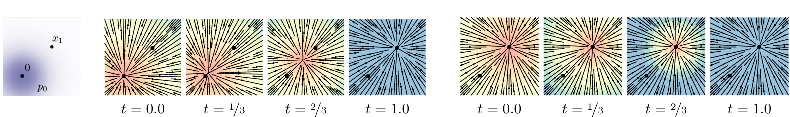
与扩散条件向量场（式 19）不同，它对所有 t ∈ [0, 1] 都有定义。对应于 ut(x | x1) 的条件流是
此时 CFM 损失（见式 9、式 14）取如下形式：
让均值与标准差线性变化不仅得到简单直观的路径，而且在下述意义下还是最优的。条件流 ψt(x) 实际上就是两个高斯 p0(x | x1) 与 p1(x | x1) 之间的最优传输（OT）位移映射。OT 插值（它是一条概率路径）定义为（见 McCann (1997) 定义 1.1）：
其中 ψ : ℝd → ℝd 是把 p0 推到 p1 的 OT 映射，id 表示恒等映射，即 id(x) = x，而 (1 − t) id + t ψ 称为 OT 位移映射。McCann (1997) 的例 1.7 表明，在我们这种「第一个高斯是标准高斯」的两个高斯情形下，OT 位移映射就取式 22 的形式。
直观地说，OT 位移映射下的粒子总是沿直线轨迹、以恒定速度运动。图 3 描绘了扩散与 OT 条件向量场的采样路径。有意思的是，我们发现扩散路径的采样轨迹可能「冲过头」越过最终样本，造成不必要的折返，而 OT 路径则保证保持笔直。
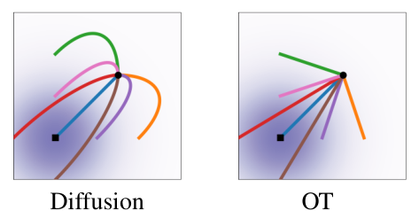
图 2 把扩散条件得分函数（典型扩散方法中的回归目标），即 ∇ log pt(x | x1)（其中 pt 按式 18 定义），与 OT 条件向量场（式 21）做了比较。两个例子中起始（p0）与终止（p1）的高斯完全相同。一个有意思的观察是：OT 向量场在时间上方向恒定，这可以说带来了更简单的回归任务。该性质也可以直接从式 21 验证，因为该向量场可写成 ut(x | x1) = g(t)h(x | x1) 的形式。附录中的图 8 给出了扩散向量场的可视化。最后我们指出：尽管条件流是最优的，这绝不意味着边缘向量场就是最优传输解。不过我们预期，边缘向量场仍会保持相对简单。
5 相关工作
连续归一化流由 Chen et al. (2018) 提出，作为归一化流的连续时间版本（综述见例如 Kobyzev et al. (2020); Papamakarios et al. (2021)）。最初 CNF 用最大似然目标训练，但这涉及前向与反向传播中昂贵的 ODE 数值模拟，由于 ODE 模拟本身的串行特性而导致很高的时间复杂度。虽然有些工作展示了 CNF 生成模型用于图像合成的能力（Grathwohl et al., 2018），但要扩展到非常高维的图像本质上很困难。一批工作尝试对 ODE 做正则化使其更易求解，例如使用增广（Dupont et al., 2019）、添加正则项（Yang & Karniadakis, 2019; Finlay et al., 2020; Onken et al., 2021; Tong et al., 2020; Kelly et al., 2020），或对积分区间做随机采样（Du et al., 2022）。这些工作只是想正则化 ODE，并没有改变根本的训练算法。
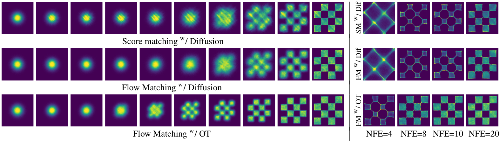
为了加速 CNF 训练，一些工作通过显式设计目标概率路径与动力学，发展了免模拟的 CNF 训练框架。例如 Rozen et al. (2021) 考虑先验密度与目标密度之间的线性插值，但涉及在高维中难以估计的积分；而 Ben-Hamu et al. (2022) 考虑与本工作类似的一般概率路径，却在随机小批量情形下存在梯度有偏的问题。相比之下，流匹配框架允许以无偏梯度进行免模拟训练，并能轻松扩展到极高维。
另一类免模拟训练方法依赖于构造一个扩散过程来间接定义目标概率路径（Sohl-Dickstein et al., 2015; Ho et al., 2020; Song & Ermon, 2019）。Song et al. (2020b) 表明扩散模型用去噪得分匹配（Vincent, 2011）训练——这是一个条件目标，给出关于得分匹配目标的无偏梯度。条件流匹配从这一结果中获得启发，但推广为直接匹配向量场。由于易于扩展，扩散模型受到越来越多的关注，产生了种种改进，例如损失重缩放（Song et al., 2021）、加入分类器引导以及结构改进（Dhariwal & Nichol, 2021）、以及学习噪声表（Nichol & Dhariwal, 2021; Kingma et al., 2021）。然而（Nichol & Dhariwal, 2021）与（Kingma et al., 2021）只考虑了由带单一参数的简单扩散过程所定义的高斯条件路径这一受限设定——特别地，它并不包含我们的条件 OT 路径。在另一条研究线索中，（De Bortoli et al., 2021; Wang et al., 2021; Peluchetti, 2021）借助扩散桥理论提出了有限时间扩散构造，解决了无限时间去噪构造所带来的近似误差。已有工作利用了扩散过程与具有相同概率路径的连续归一化流之间的联系（Maoutsa et al., 2020b; Song et al., 2020b; 2021），而我们的工作允许推广到简单扩散所能建模的概率路径类之外。借助我们的工作，可以完全绕开扩散过程构造，直接用概率路径推理，同时仍保有高效的训练与对数似然计算。最后，与我们的工作同时，（Liu et al., 2022; Albergo & Vanden-Eijnden, 2022）在 CNF 的免模拟训练上得到了类似的条件目标；而 Neklyudov et al. (2023) 在假定 ut 为梯度场时导出了一个隐式目标。
6 实验
我们在 CIFAR-10（Krizhevsky et al., 2009）以及分辨率 32、64、128 的 ImageNet（Chrabaszcz et al., 2017; Deng et al., 2009）等图像数据集上探究了使用流匹配带来的实证收益。我们还消融了流匹配中扩散路径的选择，特别是在标准方差保持扩散路径与最优传输路径之间。我们讨论了直接参数化生成向量场并使用流匹配目标如何改进样本生成。最后我们展示流匹配也可用于条件生成场景。除另有说明外，我们用 dopri5（Dormand & Prince, 1980）在绝对与相对容差均为 1e-5 下评估模型的似然和样本。生成的样本见附录，全部实现细节见附录 E。
| 模型 | CIFAR-10 | ImageNet 32×32 | ImageNet 64×64 | ||||||
| NLL↓ | FID↓ | NFE↓ | NLL↓ | FID↓ | NFE↓ | NLL↓ | FID↓ | NFE↓ | |
| 消融 | |||||||||
| DDPM | 3.12 | 7.48 | 274 | 3.54 | 6.99 | 262 | 3.32 | 17.36 | 264 |
| Score Matching | 3.16 | 19.94 | 242 | 3.56 | 5.68 | 178 | 3.40 | 19.74 | 441 |
| ScoreFlow | 3.09 | 20.78 | 428 | 3.55 | 14.14 | 195 | 3.36 | 24.95 | 601 |
| 本文 | |||||||||
| FM 配合 Diffusion | 3.10 | 8.06 | 183 | 3.54 | 6.37 | 193 | 3.33 | 16.88 | 187 |
| FM 配合 OT | 2.99 | 6.35 | 142 | 3.53 | 5.02 | 122 | 3.31 | 14.45 | 138 |
| 模型 | ImageNet 128×128 | |
| NLL↓ | FID↓ | |
| MGAN (Hoang et al., 2018) | - | 58.9 |
| PacGAN2 (Lin et al., 2018) | - | 57.5 |
| Logo-GAN-AE (Sage et al., 2018) | - | 50.9 |
| Self-cond. GAN (Lučić et al., 2019) | - | 41.7 |
| Uncond. BigGAN (Lučić et al., 2019) | - | 25.3 |
| PGMGAN (Armandpour et al., 2021) | - | 21.7 |
| FMw/ OT | 2.90 | 20.9 |
表 1 同一模型用不同方法训练时的似然（BPD）、生成样本质量（FID）与评估时间（NFE）。
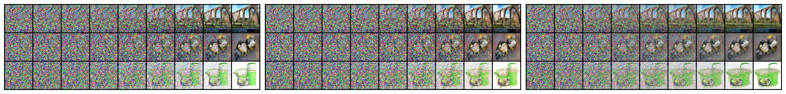
6.1 ImageNet 上的密度建模与样本质量
我们首先比较同一模型结构，即来自 Dhariwal & Nichol (2021) 的 U-Net 结构（仅做最小改动），在 CIFAR-10 与 ImageNet 32/64 上以不同主流扩散损失训练的结果：来自（Ho et al., 2020）的 DDPM、得分匹配（SM）（Song et al., 2020b）与 Score Flow（SF）（Song et al., 2021）；确切细节见附录 E.1。表 1（左）总结了我们的结果以及这些基线，报告以每维比特数（BPD）为单位的负对数似然（NLL）、以 Frechet Inception 距离（FID; Heusel et al. (2017)）衡量的样本质量，以及自适应求解器达到其预设数值容差所需的平均函数求值次数（NFE，对 5 万样本取平均）。所有模型使用相同结构、相同超参数取值与相同训练迭代数，其中允许基线使用更多迭代以获得更好收敛。注意这些都是无条件模型。在 CIFAR-10 与 ImageNet 上，FM-OT 在所有定量指标上相对竞争方法都一致取得最佳结果。我们注意到 CIFAR-10 上的 FID 相比先前工作（Ho et al., 2020; Song et al., 2020b; 2021）偏高，这可能是因为我们使用的结构并非为 CIFAR-10 优化过。
其次，表 1（右）比较了用流匹配配合 OT 路径在 ImageNet 128×128 分辨率上训练的模型。除 IC-GAN（Casanova et al., 2021）之外，我们的 FID 达到当时最优；IC-GAN 使用一个自监督 ResNet50 模型做条件化，因此被排除在本表之外。附录中的图 11、12、13 展示了这些模型的未经挑选的样本。
更快的训练。已有工作用非常多的迭代来训练扩散模型（例如 Score Flow 与 VDM 分别报告了 130 万与 1000 万次迭代），而我们发现流匹配总体收敛快得多。图 5 展示了在 ImageNet 64×64 上训练流匹配与各基线时的 FID 曲线；FM-OT 能比这些替代方法更快、更大幅度地降低 FID。对 ImageNet-128，Dhariwal & Nichol (2021) 以批量大小 256 训练了 436 万次迭代，而 FM（模型大 25%）用了 50 万次迭代、批量大小 1.5k，即图像吞吐量少 33%；确切细节见表 3。此外，使用得分匹配时，从模型采样的代价在训练过程中可能剧烈变化，而用流匹配训练时采样代价保持恒定（附录图 10）。
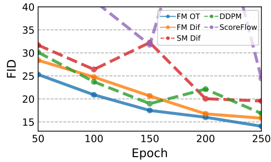
6.2 采样效率
采样时，我们先抽取随机噪声样本 x0 ∼ N(0, I)，再用训练好的向量场 vt、在区间 t ∈ [0, 1] 上用 ODE 求解器求解式 1 得到 φ1(x0)。虽然扩散模型也可以通过 SDE 形式采样，但那样可能非常低效，许多提出快速采样器的方法（例如 Song et al. (2020a); Zhang & Chen (2022)）都直接利用了 ODE 视角（见附录 D）。部分原因在于 ODE 求解器效率高得多——在相近计算代价下误差更低（Kloeden et al., 2012）——以及可用的 ODE 求解格式众多。与我们消融出的模型相比，我们发现用流匹配配合 OT 路径训练的模型无论用哪种 ODE 求解器，都始终给出最高效的采样器，如下所示。
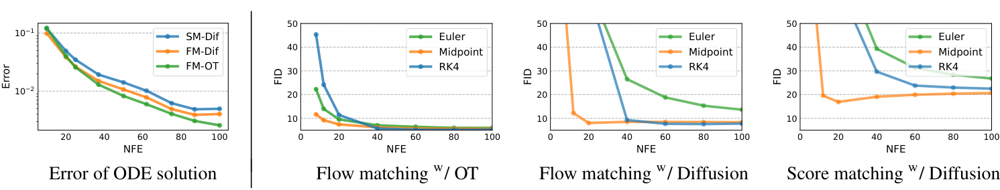
采样路径。我们首先定性地可视化扩散与 OT 在采样路径上的差异。图 6 展示了 ImageNet-64 模型在相同随机种子下的样本，我们发现 OT 路径模型比扩散路径模型更早开始生成图像，而后者直到最后一刻噪声都占主导。我们还刻画了 2D 棋盘格生成中的概率密度路径，图 4（左），观察到类似的趋势。
低成本采样。接下来我们换用固定步长求解器，并用表 1 中的 ImageNet-32 模型比较低（≤100）NFE 的样本。在图 7（左）中，我们比较低 NFE 解与 1000 NFE 解之间的逐像素 MSE（使用 256 个随机噪声种子），发现 FM 配合 OT 的模型在计算代价意义上数值误差最好，只需约 60% 的 NFE 就能达到与扩散模型相同的误差阈值。其次，图 7（右）展示 FID 如何随计算代价变化，我们发现 FM 配合 OT 即便在很低的 NFE 值下也能取得不错的 FID，在样本质量与代价之间给出比消融模型更好的折中。图 4（右）展示了 2D 棋盘格实验中的低成本采样效果。
6.3 低分辨率图像的条件采样
最后，我们在条件图像生成上试验了流匹配，特别是把图像从 64×64 上采样到 256×256。我们遵循（Saharia et al., 2022）的评估流程，计算上采样后验证图像的 FID；基线包括参考（原始验证集的 FID）与回归。结果见表 2。上采样图像样本见附录图 14、15。FM-OT 取得了与（Saharia et al., 2022）相近的 PSNR 与 SSIM 值，同时在 FID 与 IS 上有明显改善——如（Saharia et al., 2022）所论证的，后者是生成质量的更好指示。
| 模型 | FID↓ | IS↑ | PSNR↑ | SSIM↑ |
| Reference | 1.9 | 240.8 | - | - |
| Regression | 15.2 | 121.1 | 27.9 | 0.801 |
| SR3 (Saharia et al., 2022) | 5.2 | 180.1 | 26.4 | 0.762 |
| FMw/ OT | 3.4 | 200.8 | 24.7 | 0.747 |
表 2 ImageNet 验证集上的图像超分辨率。
7 结论
我们提出了流匹配——一个用于训练连续归一化流模型的新型免模拟框架，它依靠条件构造毫不费力地扩展到极高维。此外，FM 框架提供了看待扩散模型的另一种视角，并建议舍弃随机/扩散构造，转而更直接地指定概率路径，从而使我们能够构造例如允许更快采样和/或改进生成的路径。我们通过实验展示了使用流匹配框架训练与采样的便利性；未来我们预期 FM 将为引入大量概率路径（例如非各向同性高斯或更一般的核）打开大门。
8 社会责任
除了许多正面应用之外，图像生成也可能被用于有害目的。使用内容受控的训练集以及图像验证/分类有助于减少这类用途。此外，训练大型深度学习模型的能耗需求正在快速增长（Amodei et al., 2018; Thompson et al., 2020），因此专注于能用更少梯度更新/图像吞吐完成训练的方法，可以带来显著的时间与能源节省。
参考文献
按原文要求，参考文献整节保留英文原文，未作翻译；编号顺序与原文一致（原文采用「作者—年份」式引用）。
- Michael S Albergo and Eric Vanden-Eijnden. Building normalizing flows with stochastic interpolants. arXiv preprint arXiv:2209.15571, 2022.
- Dario Amodei, Danny Hernandez, Girish SastryJack, Jack Clark, Greg Brockman, and Ilya Sutskever. Ai and compute. https://openai.com/blog/ai-and-compute/, 2018.
- Mohammadreza Armandpour, Ali Sadeghian, Chunyuan Li, and Mingyuan Zhou. Partition-guided gans. In Proceedings of the IEEE/CVF Conference on Computer Vision and Pattern Recognition, pp. 5099–5109, 2021.
- Heli Ben-Hamu, Samuel Cohen, Joey Bose, Brandon Amos, Aditya Grover, Maximilian Nickel, Ricky T. Q. Chen, and Yaron Lipman. Matching normalizing flows and probability paths on manifolds. arXiv preprint arXiv:2207.04711, 2022.
- Arantxa Casanova, Marlene Careil, Jakob Verbeek, Michal Drozdzal, and Adriana Romero Soriano. Instance-conditioned gan. Advances in Neural Information Processing Systems, 34:27517–27529, 2021.
- Ricky T. Q. Chen. torchdiffeq, 2018. URL https://github.com/rtqichen/ torchdiffeq.
- Ricky T. Q. Chen, Yulia Rubanova, Jesse Bettencourt, and David K Duvenaud. Neural ordinary differential equations. Advances in neural information processing systems, 31, 2018.
- Patryk Chrabaszcz, Ilya Loshchilov, and Frank Hutter. A downsampled variant of imagenet as an alternative to the cifar datasets. arXiv preprint arXiv:1707.08819, 2017.
- Valentin De Bortoli, James Thornton, Jeremy Heng, and Arnaud Doucet. Diffusion schrodinger ¨ bridge with applications to score-based generative modeling. (arXiv:2106.01357), Dec 2021. doi: 10.48550/arXiv.2106.01357. URL http://arxiv.org/abs/2106.01357. arXiv:2106.01357 [cs, math, stat].
- Jia Deng, Wei Dong, Richard Socher, Li-Jia Li, Kai Li, and Li Fei-Fei. Imagenet: A large-scale hierarchical image database. In 2009 IEEE Conference on Computer Vision and Pattern Recognition, pp. 248–255, 2009. doi: 10.1109/CVPR.2009.5206848.
- Prafulla Dhariwal and Alexander Quinn Nichol. Diffusion models beat GANs on image synthesis. In A. Beygelzimer, Y. Dauphin, P. Liang, and J. Wortman Vaughan (eds.), Advances in Neural Information Processing Systems, 2021. URL https://openreview.net/forum?id= AAWuCvzaVt.
- John R Dormand and Peter J Prince. A family of embedded runge-kutta formulae. Journal of computational and applied mathematics, 6(1):19–26, 1980.
- Shian Du, Yihong Luo, Wei Chen, Jian Xu, and Delu Zeng. To-flow: Efficient continuous normalizing flows with temporal optimization adjoint with moving speed, 2022. URL https: //arxiv.org/abs/2203.10335.
- Emilien Dupont, Arnaud Doucet, and Yee Whye Teh. Augmented neural odes. In H. Wallach, H. Larochelle, A. Beygelzimer, F. d´ Alche-Buc, E. Fox, and R. Gar-´ nett (eds.), Advances in Neural Information Processing Systems, volume 32. Curran Associates, Inc., 2019. URL https://proceedings.neurips.cc/paper/2019/file/ 21be9a4bd4f81549a9d1d241981cec3c-Paper.pdf.
- Chris Finlay, Jorn-Henrik Jacobsen, Levon Nurbekyan, and Adam M. Oberman. How to train your¨ neural ode: the world of jacobian and kinetic regularization. In ICML, pp. 3154–3164, 2020. URL http://proceedings.mlr.press/v119/finlay20a.html.
- Will Grathwohl, Ricky T. Q. Chen, Jesse Bettencourt, Ilya Sutskever, and David Duvenaud. Ffjord: Free-form continuous dynamics for scalable reversible generative models, 2018. URL https: //arxiv.org/abs/1810.01367.
- Martin Heusel, Hubert Ramsauer, Thomas Unterthiner, Bernhard Nessler, and Sepp Hochreiter. Gans trained by a two time-scale update rule converge to a local nash equilibrium. Advances in neural information processing systems, 30, 2017.
- Jonathan Ho, Ajay Jain, and Pieter Abbeel. Denoising diffusion probabilistic models. Advances in Neural Information Processing Systems, 33:6840–6851, 2020.
- Quan Hoang, Tu Dinh Nguyen, Trung Le, and Dinh Phung. Mgan: Training generative adversarial nets with multiple generators. In International conference on learning representations, 2018.
- Jacob Kelly, Jesse Bettencourt, Matthew J Johnson, and David K Duvenaud. Learning differential equations that are easy to solve. Advances in Neural Information Processing Systems, 33:4370– 4380, 2020.
- Diederik P Kingma, Tim Salimans, Ben Poole, and Jonathan Ho. Variational diffusion models. In A. Beygelzimer, Y. Dauphin, P. Liang, and J. Wortman Vaughan (eds.), Advances in Neural Information Processing Systems, 2021. URL https://openreview.net/forum?id= 2LdBqxc1Yv.
- Peter Eris Kloeden, Eckhard Platen, and Henri Schurz. Numerical solution of SDE through computer experiments. Springer Science & Business Media, 2012.
- Ivan Kobyzev, Simon JD Prince, and Marcus A Brubaker. Normalizing flows: An introduction and review of current methods. IEEE transactions on pattern analysis and machine intelligence, 43 (11):3964–3979, 2020.
- Alex Krizhevsky, Geoffrey Hinton, et al. Learning multiple layers of features from tiny images. 2009.
- Zinan Lin, Ashish Khetan, Giulia Fanti, and Sewoong Oh. Pacgan: The power of two samples in generative adversarial networks. Advances in neural information processing systems, 31, 2018.
- Xingchao Liu, Chengyue Gong, and Qiang Liu. Flow straight and fast: Learning to generate and transfer data with rectified flow. arXiv preprint arXiv:2209.03003, 2022.
- Mario Luciˇ c, Michael Tschannen, Marvin Ritter, Xiaohua Zhai, Olivier Bachem, and Sylvain Gelly.´ High-fidelity image generation with fewer labels. In International conference on machine learning, pp. 4183–4192. PMLR, 2019.
- Dimitra Maoutsa, Sebastian Reich, and Manfred Opper. Interacting particle solutions of fokker–planck equations through gradient–log–density estimation. Entropy, 22(8):802, jul 2020a. doi: 10.3390/e22080802. URL https://doi.org/10.3390%2Fe22080802.
- Dimitra Maoutsa, Sebastian Reich, and Manfred Opper. Interacting particle solutions of fokker– planck equations through gradient–log–density estimation. Entropy, 22(8):802, 2020b.
- Robert J McCann. A convexity principle for interacting gases. Advances in mathematics, 128(1): 153–179, 1997.
- Kirill Neklyudov, Daniel Severo, and Alireza Makhzani. Action matching: A variational method for learning stochastic dynamics from samples, 2023. URL https://openreview.net/ forum?id=T6HPzkhaKeS.
- Alexander Quinn Nichol and Prafulla Dhariwal. Improved denoising diffusion probabilistic models. In International Conference on Machine Learning, pp. 8162–8171. PMLR, 2021.
- Derek Onken, Samy Wu Fung, Xingjian Li, and Lars Ruthotto. Ot-flow: Fast and accurate continuous normalizing flows via optimal transport. Proceedings of the AAAI Conference on Artificial Intelligence, 35(10):9223–9232, May 2021. URL https://ojs.aaai.org/index.php/ AAAI/article/view/17113.
- George Papamakarios, Eric T Nalisnick, Danilo Jimenez Rezende, Shakir Mohamed, and Balaji Lakshminarayanan. Normalizing flows for probabilistic modeling and inference. J. Mach. Learn. Res., 22(57):1–64, 2021.
- Stefano Peluchetti. Non-denoising forward-time diffusions. 2021.
- Aditya Ramesh, Prafulla Dhariwal, Alex Nichol, Casey Chu, and Mark Chen. Hierarchical textconditional image generation with clip latents. arXiv preprint arXiv:2204.06125, 2022.
- Robin Rombach, Andreas Blattmann, Dominik Lorenz, Patrick Esser, and Bjorn Ommer. High-¨ resolution image synthesis with latent diffusion models. In Proceedings of the IEEE/CVF Conference on Computer Vision and Pattern Recognition, pp. 10684–10695, 2022.
- Noam Rozen, Aditya Grover, Maximilian Nickel, and Yaron Lipman. Moser flow: Divergencebased generative modeling on manifolds. In A. Beygelzimer, Y. Dauphin, P. Liang, and J. Wortman Vaughan (eds.), Advances in Neural Information Processing Systems, 2021. URL https://openreview.net/forum?id=qGvMv3undNJ.
- Alexander Sage, Eirikur Agustsson, Radu Timofte, and Luc Van Gool. Logo synthesis and manipulation with clustered generative adversarial networks. In Proceedings ofthe IEEE Conference on Computer Vision and Pattern Recognition, pp. 5879–5888, 2018.
- Chitwan Saharia, Jonathan Ho, William Chan, Tim Salimans, David J Fleet, and Mohammad Norouzi. Image super-resolution via iterative refinement. IEEE Transactions on Pattern Analysis and Machine Intelligence, 2022.
- Jascha Sohl-Dickstein, Eric Weiss, Niru Maheswaranathan, and Surya Ganguli. Deep unsupervised learning using nonequilibrium thermodynamics. In International Conference on Machine Learning, pp. 2256–2265. PMLR, 2015.
- Jiaming Song, Chenlin Meng, and Stefano Ermon. Denoising diffusion implicit models. arXiv preprint arXiv:2010.02502, 2020a.
- Yang Song and Stefano Ermon. Generative modeling by estimating gradients of the data distribution. In H. Wallach, H. Larochelle, A. Beygelzimer, F. d´ Alche-Buc, E. Fox, and R. Gar-´ nett (eds.), Advances in Neural Information Processing Systems, volume 32. Curran Associates, Inc., 2019. URL https://proceedings.neurips.cc/paper/2019/file/ 3001ef257407d5a371a96dcd947c7d93-Paper.pdf.
- Yang Song, Jascha Sohl-Dickstein, Diederik P Kingma, Abhishek Kumar, Stefano Ermon, and Ben Poole. Score-based generative modeling through stochastic differential equations. arXiv preprint arXiv:2011.13456, 2020b.
- Yang Song, Conor Durkan, Iain Murray, and Stefano Ermon. Maximum likelihood training of scorebased diffusion models. In Thirty-Fifth Conference on Neural Information Processing Systems, 2021.
- Neil C Thompson, Kristjan Greenewald, Keeheon Lee, and Gabriel F Manso. The computational limits of deep learning. arXiv preprint arXiv:2007.05558, 2020.
- Alexander Tong, Jessie Huang, Guy Wolf, David Van Dijk, and Smita Krishnaswamy. Trajectorynet: A dynamic optimal transport network for modeling cellular dynamics. In International conference on machine learning, pp. 9526–9536. PMLR, 2020.
- Cedric Villani.´ Optimal transport: old and new, volume 338. Springer, 2009.
- Pascal Vincent. A connection between score matching and denoising autoencoders. Neural computation, 23(7):1661–1674, 2011.
- Gefei Wang, Yuling Jiao, Qian Xu, Yang Wang, and Can Yang. Deep generative learning via schrodinger bridge. (arXiv:2106.10410), Jul 2021. doi: 10.48550/arXiv.2106.10410. URL¨ http://arxiv.org/abs/2106.10410. arXiv:2106.10410 [cs].
- Liu Yang and George E. Karniadakis. Potential flow generator with \$l 2\$ optimal transport regularity for generative models. CoRR, abs/1908.11462, 2019. URL http://arxiv.org/abs/ 1908.11462.
- Qinsheng Zhang and Yongxin Chen. Fast sampling of diffusion models with exponential integrator. arXiv preprint arXiv:2204.13902, 2022.
附录 A 定理证明
定理 1. 给定生成条件概率路径 pt(x | x1) 的向量场 ut(x | x1)，则对任意分布 q(x1)，式 8 中的边缘向量场 ut 生成式 6 中的边缘概率路径 pt，即 ut 与 pt 满足连续性方程（式 26）。
证明. 为此我们验证 pt 与 ut 满足连续性方程（式 26）：
= − div(∫ ut(x | x1) pt(x | x1) q(x1) dx1) = − div(ut(x) pt(x)),
其中第二个等号用到了「ut(· | x1) 生成 pt(· | x1)」这一事实，最后一个等号用到了式 8。此外，第一个与第三个等号成立，是假定被积函数满足莱布尼茨法则（交换积分与求导）的正则性条件。
定理 2. 假定对所有 x ∈ ℝd 与 t ∈ [0, 1] 都有 pt(x) > 0，则在不计一个与 θ 无关的常数的意义下，ℒCFM 与 ℒFM 相等。因此 ∇θℒFM(θ) = ∇θℒCFM(θ)。
证明. 为保证所有积分存在、并允许交换积分次序（用 Fubini 定理），我们假定 q(x) 与 pt(x | x1) 在 ‖x‖ → ∞ 时以足够快的速度衰减到零，且 ut、vt、∇θvt 有界。
首先，利用 2-范数的标准双线性性质有
‖vt(x) − ut(x | x1)‖2 = ‖vt(x)‖2 − 2⟨vt(x), ut(x | x1)⟩ + ‖ut(x | x1)‖2
接着，注意 ut 与 θ 无关，并且
其中第二个等号用到式 6，第三个等号交换了积分次序。接着，
= ∫ ⟨vt(x), ∫ ut(x | x1) pt(x | x1) q(x1) dx1⟩ dx
= ∫ ⟨vt(x), ut(x | x1)⟩ pt(x | x1) q(x1) dx1 dx = 𝔼q(x1), pt(x|x1)⟨vt(x), ut(x | x1)⟩,
其中最后一个等号再次交换了积分次序。
定理 3. 设 pt(x | x1) 是式 10 中的高斯概率路径，ψt 是式 11 中相应的流映射。则定义 ψt 的向量场唯一，其形式为
因此 ut(x | x1) 生成高斯路径 pt(x | x1)。
证明. 为记号简洁，令 wt(x) = ut(x | x1)。现在考虑式 1：
由于 ψt 可逆（因为 σt(x1) > 0），我们令 x = ψ−1(y) 得到
其中我们用撇号记导数，以强调 ψt′ 是在 ψ−1(y) 处求值。现在，对 ψt(x) 求逆给出
对 ψt 关于 t 求导得
把最后两式代入式 25 得
即所证。
附录 B 连续性方程
检验一个向量场 vt 是否生成概率路径 pt 的一种方法是连续性方程（Villani, 2009）。它是一个偏微分方程（PDE），给出了「向量场 vt 生成 pt」的充要条件：
其中散度算子 div 是对空间变量 x = (x1, …, xd) 定义的，即 div = d∑i=1∂∂xi。
附录 C 计算 CNF 模型的概率
给定任意数据点 x1 ∈ ℝd，我们需要计算该点处的模型概率，即 p1(x1)。下面我们回顾如何做到这一点，涵盖相关的基本 ODE、散度计算的缩放、考虑数据变换（例如数据中心化）以及每维比特数（BPD）计算。
计算 p1(x1) 的 ODE。连续性方程与式 1 导出了瞬时变量替换公式（Chen et al., 2018; Ben-Hamu et al., 2022）：
对 t ∈ [0, 1] 积分给出：
因此，对数概率可以与流的轨迹一起、通过求解下述 ODE 得到：
f(t)] = [vt(φt(x))
−div(vt(φt(x)))]
给定初始条件
f(0)] = [x0
c].
解 [φt(x), f(t)]T 被唯一确定（在向量场 vt 的一些温和条件下）。记 x1 = φ1(x)，根据式 27，
现在给定任意 x1，我们想计算 p1(x1)。为此我们需要反向求解式 28，即
f(1−s)] = [−v1−s(φ1−s(x))
div(v1−s(φ1−s(x)))]
并在 s ∈ [0, 1] 上求解它，初始条件取在 s = 0：
f(1)] = [x1
0].
由 ODE 解的唯一性，该解将与式 28 在式 29 初始条件下、令 c = log p0(x0) − log p1(x1) 时的解相同。这可由式 30 并令 f(1) = 0 看出。因此我们得到
从而
总结：要计算 p1(x1)，我们先以式 32 为初始条件求解式 31 的 ODE，然后计算式 33。
p1(x1) 的无偏估计量。求解式 31 需要计算 ℝd 中向量场的散度，代价高昂。Grathwohl et al. (2018) 建议用（无偏的）Hutchinson 迹估计量代替散度：
f̃(1−s)] = [−v1−s(φ1−s(x))
zTDv1−s(φ1−s(x))z],
其中 z ∈ ℝd 是某个满足 𝔼zzT = I 的随机变量的样本。以式 32 为初始条件精确求解（实践中带一个受控的小误差）式 34 的 ODE，可得
= log p0(x0) − 𝔼z[∫01 zTDv1−s(φ1−s(x))z ds] = log p0(x0) − ∫01 𝔼z[zTDv1−s(φ1−s(x))z] ds
= log p0(x0) − ∫01 div(v1−s(φ1−s(x))) ds = log p0(x0) − (f(0) − f(1))
= log p0(x0) − (log p0(x0) − log p1(x1)) = log p1(x1),
其中第三个等号在假定 Fubini 定理的充分条件成立时交换了积分次序，倒数第二个等号用到了式 30。因此随机变量
是 log p1(x1) 的无偏估计量。总结：为实现可扩展的无偏估计，我们先以式 32 为初始条件求解式 34 的 ODE，然后输出式 35。
变换后的数据。训练生成模型之前，我们常先对数据做变换，例如缩放和/或平移。这样的变换记为 φ−1 : ℝd → ℝd，我们的生成模型则成为一个复合
其中 ϕ : ℝd → ℝd 是我们训练的模型。给定先验概率 p0，该概率在 ψ 下的推前（式 3 与式 4）取如下形式：
= (ϕ* p0(φ−1(x))) det[Dφ−1(x)]
因此
对图像，d = H × W × 3，我们考虑把每个像素值从 [−1, 1] 映射到 [0, 256] 的变换 φ。因此
此时有
每维比特数（BPD）计算。BPD 定义为
由式 36 我们得到
而 log ϕ* p0(φ−1(x)) 用式 35 的无偏估计量在变换后的数据 φ−1(x1) 上近似。在大的测试集 x1 上对该无偏估计量取平均，就能很好地近似测试集 BPD。
附录 D 扩散条件向量场
我们为 VE 与 VP 扩散路径（式 18）推导支配概率流 ODE（Song et al. (2020b) 式 13）的向量场，并指出它与我们用定理 3 导出的条件向量场一致，即式 16 与式 19 定义的向量场。
我们先用一小段引论说明如何为 Fokker-Planck 方程描述的概率路径找到条件向量场，然后把它具体化到 VE 与 VP 概率路径。
由于扩散文献中的扩散过程从 t = 0 的数据走到 t = 1 的噪声，我们需要下述引理把扩散向量场翻译到我们「t = 0 对应噪声、t = 1 对应数据」的约定：
引理 1. 考虑由向量场 ut(x) 定义的流，它生成概率密度路径 pt(x)。则向量场 ũt(x) = −u1−t(x) 在从 p̃0(x) = p1(x) 出发时生成路径 p̃t(x) = p1−t(x)。
证明. 我们使用连续性方程（式 26）：
因此 ũt(x) = −u1−t(x) 生成 p̃t(x)。
Fokker-Planck 概率路径的条件向量场。考虑标准形式的随机微分方程（SDE）
其中时间参数为 t、漂移为 ft、扩散系数为 gt，dw 是 Wiener 过程。该 SDE 的解 yt 是一个随机过程，即一个连续的时间相关随机变量，其概率密度 pt(yt) 由 Fokker-Planck 方程刻画：
其中 Δ 表示（关于 y 的）Laplace 算子，即 div ∇，∇ 是（同样关于 y 的）梯度算子。把该方程改写成连续性方程的形式可以这样做（Maoutsa et al., 2020a）：
其中向量场
与概率路径 pt 一起满足连续性方程，因此生成 pt。
方差爆炸（VE）路径。VE 路径的 SDE 是
其中 σ0 = 0，且随着 t → 1 递增到无穷。该 SDE 从 t = 0 的数据 y0 走到 t = 1 的噪声 y1，其概率路径为
根据式 40，其条件向量场为
用引理 1 可得概率路径
由下式生成
这与式 17 一致。
方差保持（VP）路径。VP 路径的 SDE 是
其中 T(t) = ∫0t β(s) ds，t ∈ [0, 1]。因此该 SDE 的系数为
把这些选择代入式 40，得到条件向量场
用引理 1 反转时间，我们得到反概率路径的条件向量场：
这与式 19 一致。
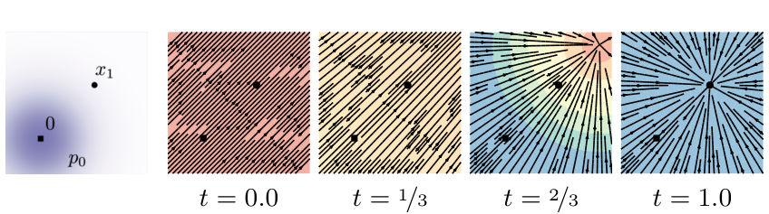
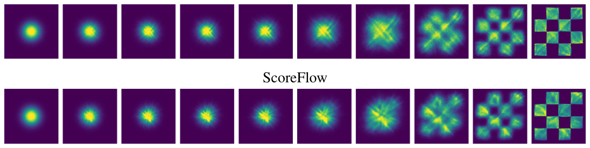
附录 E 实现细节
对 2D 例子我们使用含 5 个隐藏层、每层 512 个神经元的 MLP；对图像我们使用 Dhariwal & Nichol (2021) 的 UNet 结构。对图像，我们做中心裁剪并缩放到合适尺寸；对 32×32 与 64×64 分辨率我们使用与（Chrabaszcz et al., 2017）相同的预处理。三种方法（FM-OT、FM-Diffusion 与 SM-Diffusion）始终在相同结构、相同超参数与相同轮数下训练。
E.1 扩散基线
损失。我们考虑三种选项作为扩散基线，对应最主流的扩散损失参数化（Song & Ermon, 2019; Song et al., 2021; Ho et al., 2020; Kingma et al., 2021）。我们假定式 10 的一般高斯路径形式，即
得分匹配损失为
取 λ(t) = σt2(x1) 对应 Song & Ermon (2019) 的原始得分匹配（SM）损失；取 λ(t) = β(1 − t)（β 定义见下）对应由 NLL 上界导出的 Score Flow（SF）损失（Song et al., 2021）；st 是可学习的得分函数。Ho et al. (2020)（式 14）的 DDPM（噪声匹配）损失为
其中 p0(x) = N(x | 0, I) 是标准高斯，ϵt 是可学习的噪声函数。
扩散路径。对扩散路径我们使用标准 VP 扩散（式 19），即
并按 Song et al. (2020b) 的建议取 β(s) = βmin + s(βmax − βmin)，从而
其中 βmin = 0.1、βmax = 20，时间在 [0, 1 − ϵ] 中采样，训练与似然时 ϵ = 10−5，采样时 ϵ = 10−5。注
采样。得分匹配样本通过用向量场求解 ODE（式 1）得到：
DDPM 样本则在令 st(x) = ϵt(x)/σt 后用式 46 计算，其中 σt = √(1 − α1−t2)。
E.2 训练与评估细节
我们在表 3 中报告所用的超参数。训练 CIFAR10 与 ImageNet-32 时使用完整 32 位精度，训练 ImageNet-64/128/256 时使用 16 位混合精度。所有模型都用 Adam 优化器训练，参数为 β1 = 0.9、β2 = 0.999、权重衰减 = 0.0、ϵ = 1e−8。我们训练的所有方法（即 FM-OT、FM-Diffusion、SM-Diffusion）使用相同结构、相同参数、相同轮数（细节见表 3）。我们使用常数学习率表或多项式衰减表（见表 3）。多项式衰减学习率表包含一个指定训练步数的预热阶段：预热阶段学习率从 1e−8 线性升到峰值学习率（表 3 中给出）；达到峰值后，学习率线性衰减到 1e−8 直到最后一步训练。
| CIFAR10 | ImageNet-32 | ImageNet-64 | ImageNet-128 | |
| Channels | 256 | 256 | 192 | 256 |
| Depth | 2 | 3 | 3 | 3 |
| Channels multiple | 1,2,2,2 | 1,2,2,2 | 1,2,3,4 | 1,1,2,3,4 |
| Heads | 4 | 4 | 4 | 4 |
| Heads Channels | 64 | 64 | 64 | 64 |
| Attention resolution | 16 | 16,8 | 32,16,8 | 32,16,8 |
| Dropout | 0.0 | 0.0 | 0.0 | 0.0 |
| Effective Batch size | 256 | 1024 | 2048 | 1536 |
| GPUs | 2 | 4 | 16 | 32 |
| Epochs | 1000 | 200 | 250 | 571 |
| Iterations | 391k | 250k | 157k | 500k |
| Learning Rate | 5e-4 | 1e-4 | 1e-4 | 1e-4 |
| Learning Rate Scheduler | Polynomial Decay | Polynomial Decay | Constant | Polynomial Decay |
| Warmup Steps | 45k | 20k | - | 20k |
表 3 训练各模型所用的超参数。
报告负对数似然时，我们使用标准的均匀去量化。我们报告用下式得到的重要性加权估计：
其中 x 取值于 {0, …, 255}，并在 t = 1 用自适应步长求解器 dopri5（atol = rtol = 1e−5）、借助 torchdiffeq（Chen, 2018）库求解。不同 K 值下的估计值见表 4。
| 模型 | CIFAR-10 | ImageNet 32×32 | ImageNet 64×64 | ||||||
| K=1 | K=20 | K=50 | K=1 | K=5 | K=15 | K=1 | K=5 | K=10 | |
| 消融 | |||||||||
| DDPM | 3.24 | 3.14 | 3.12 | 3.62 | 3.57 | 3.54 | 3.36 | 3.33 | 3.32 |
| Score Matching | 3.28 | 3.18 | 3.16 | 3.65 | 3.59 | 3.57 | 3.43 | 3.41 | 3.40 |
| ScoreFlow | 3.21 | 3.11 | 3.09 | 3.63 | 3.57 | 3.55 | 3.39 | 3.37 | 3.36 |
| 本文 | |||||||||
| FMw/ Diffusion | 3.23 | 3.13 | 3.10 | 3.64 | 3.58 | 3.56 | 3.37 | 3.34 | 3.33 |
| FMw/ OT | 3.11 | 3.01 | 2.99 | 3.62 | 3.56 | 3.53 | 3.35 | 3.33 | 3.31 |
表 4 用均匀去量化时，不同 K 值下测试集上的负对数似然（以每维比特为单位）。
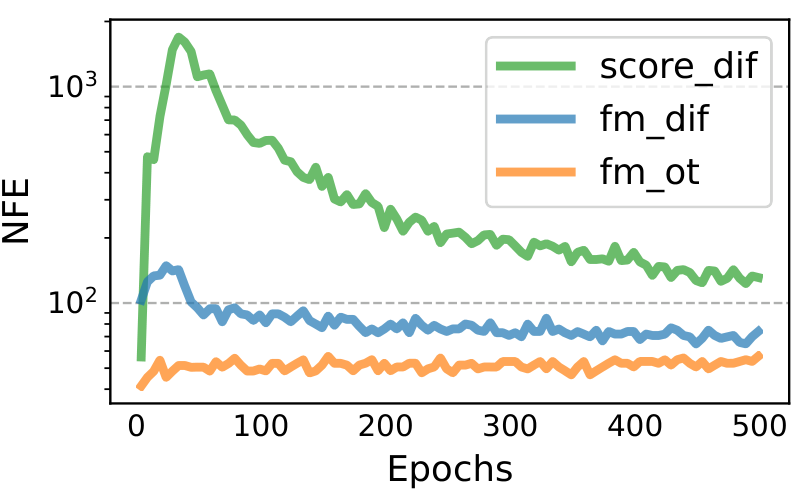
在计算 CIFAR10、ImageNet-32/64 的 FID/Inception 分数时，我们使用 TensorFlow GAN 库2。为了与 Dhariwal & Nichol (2021) 在 ImageNet-128 上保持可比，我们使用他们在公开代码库中提供的评估脚本3。
附录 F 附加表格与图
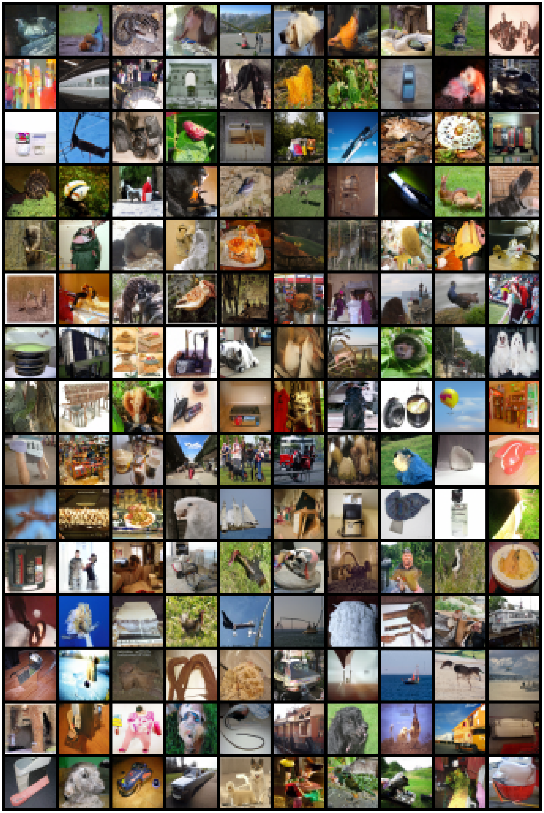
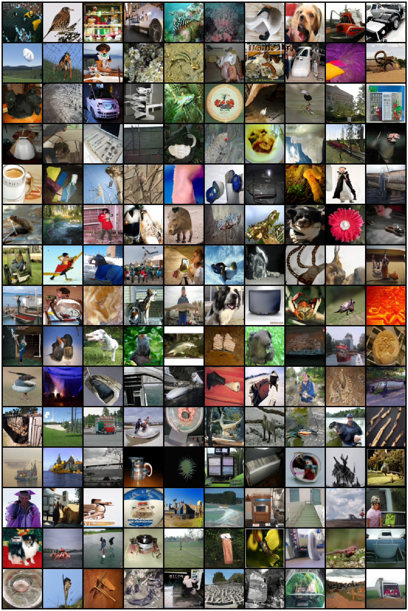
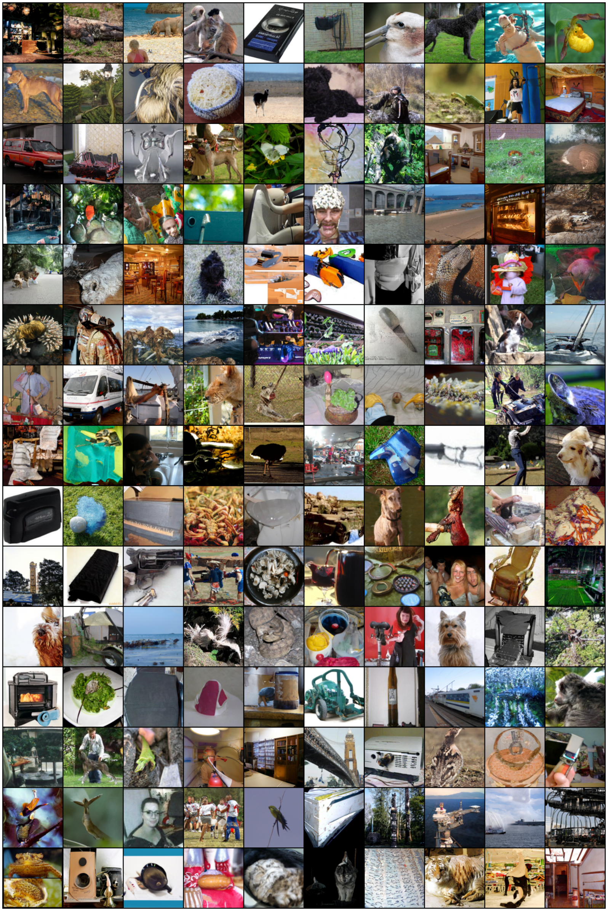
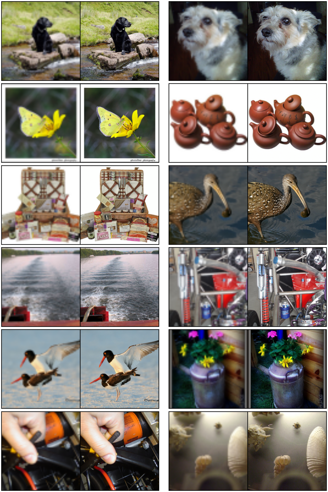
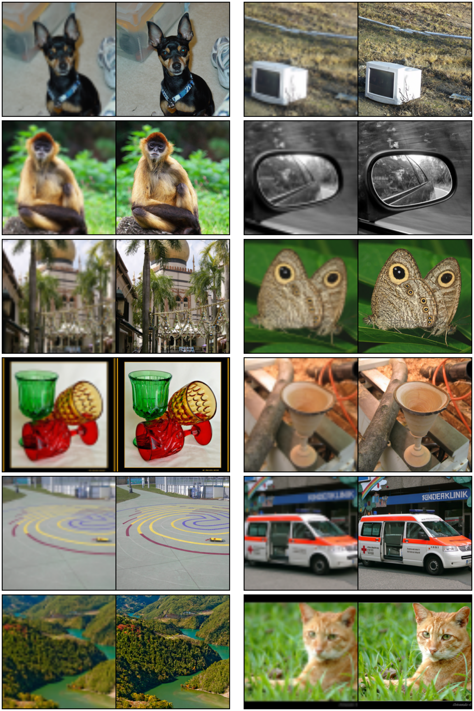
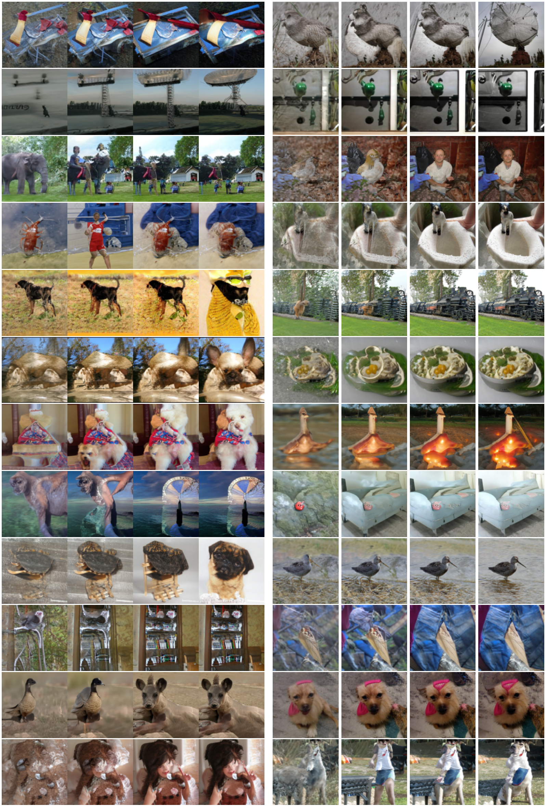
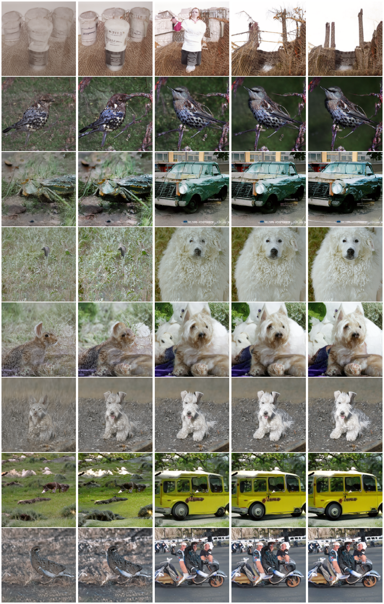
图表索引
- 图 1 ImageNet-128 无条件样本（引言）
- 图 2 扩散条件得分函数与 OT 条件向量场的对比（4.1 节）
- 图 3 扩散轨迹与 OT 轨迹（4.1 节）
- 图 4 2D 棋盘格上的轨迹与采样效率（5 节）
- 图 5 训练过程中的图像质量，ImageNet 64×64（6.1 节）
- 图 6 同一初始噪声下的采样路径，ImageNet 64×64（6 节）
- 图 7 NFE 与数值误差、样本质量的关系，ImageNet 32×32（6.2 节）
- 图 8 VP 扩散路径的条件向量场（附录 D）
- 图 9 ScoreFlow 与 DDPM 损失训练出的 CNF 轨迹（附录 D）
- 图 10 训练中采样所需的函数求值次数，CIFAR-10（附录 E.2）
- 图 11 无条件 ImageNet-32 生成样本（附录 F）
- 图 12 无条件 ImageNet-64 生成样本（附录 F）
- 图 13 无条件 ImageNet-128 生成样本（附录 F）
- 图 14 条件生成 64×64 → 256×256（附录 F）
- 图 15 条件生成 64×64 → 256×256（附录 F）
- 图 16 不同 NFE 的生成样本，ImageNet-128（附录 F）
- 图 17 不同 NFE 的生成样本，ImageNet 256×256（附录 F）
表 1 同一模型不同训练方法的 NLL / FID / NFE（6 节）、表 2 ImageNet 验证集上的超分辨率（6.3 节）、表 3 训练超参数（附录 E.2）、表 4 不同 K 下的 NLL（附录 E.2）已在正文中直接排出。式 (1)–(47) 以公式块形式排入正文。
本页由 Zotero 库中的 PDF 原文与 MinerU 解析结果翻译整理而成。图片为从源 PDF 中裁取的原始插图，存于同目录下 images/。参考文献保留原文，未作翻译；原文脚注按位置保留并译出。